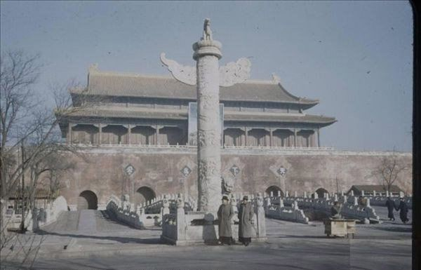

Цель поездки в Пекин
Поездка Н.Я. Бичурина в Пекин была связана со служением в составе Русской духовной миссии. Помимо церковных обязанностей, его ключевой задачей стало глубокое изучение китайского языка, исторических хроник и культурных традиций.
В Пекине он собирал и систематизировал источники, делал переводы и готовил материалы, которые позже легли в основу его научных трудов. Именно эта работа превратила Бичурина в одного из основателей российского китаеведения.